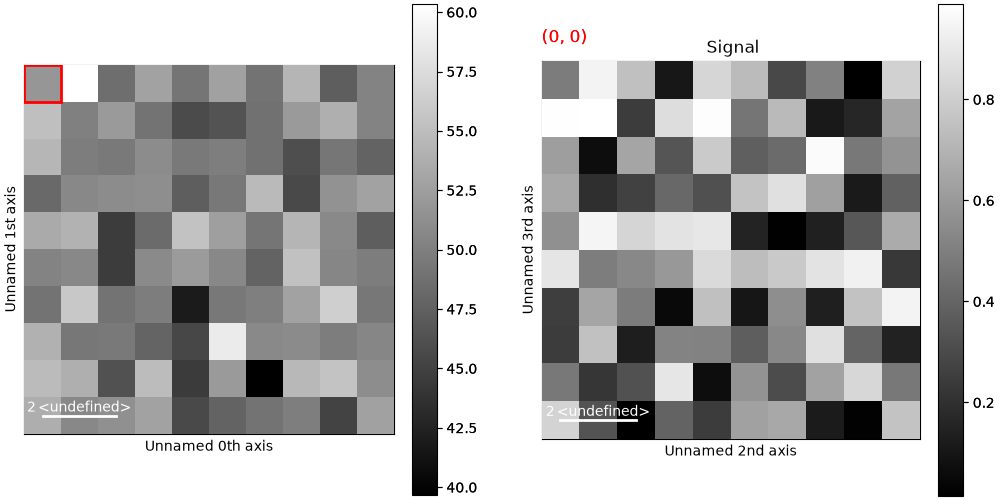
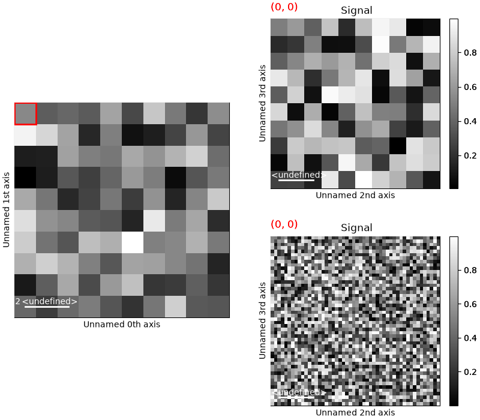

Note
Go to the end to download the full example code.
Creating Custom Layouts#
Custom layouts for hyperspy figures can be created using the matplotlib.figure.SubFigure class. Passing
the fig argument to the plot() method of a hyperspy signal object will target
that figure instead of creating a new one. This is useful for creating custom layouts with multiple subplots.
Note
Plotting data with subfigures is slower than using separates figures.
# Creating a simple layout with two subplots
import matplotlib.pyplot as plt
import hyperspy.api as hs
import numpy as np
rng = np.random.default_rng()
s = hs.signals.Signal2D(rng.random((10, 10, 10, 10)))
fig = plt.figure(figsize=(10, 5), layout="constrained")
subfigs = fig.subfigures(1, 2, wspace=0.07)
s.plot(navigator_kwds=dict(fig=subfigs[0]), fig=subfigs[1])

# Sharing a navigator between two hyperspy signals
s = hs.signals.Signal2D(rng.random((10, 10, 10, 10)))
s2 = hs.signals.Signal2D(rng.random((10, 10, 50, 50)))
fig = plt.figure(figsize=(8, 7), layout="constrained")
head_figures = fig.subfigures(1, 2, wspace=0.07)
signal_figures = head_figures[1].subfigures(2, 1, hspace=0.07)
s.plot(navigator_kwds=dict(fig=head_figures[0], colorbar=None), fig=signal_figures[0])
s2.plot(navigator=None, fig=signal_figures[1], axes_manager=s.axes_manager)

sphinx_gallery_thumbnail_number = 2
Total running time of the script: (0 minutes 1.367 seconds)